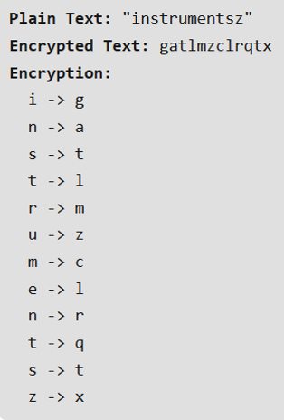
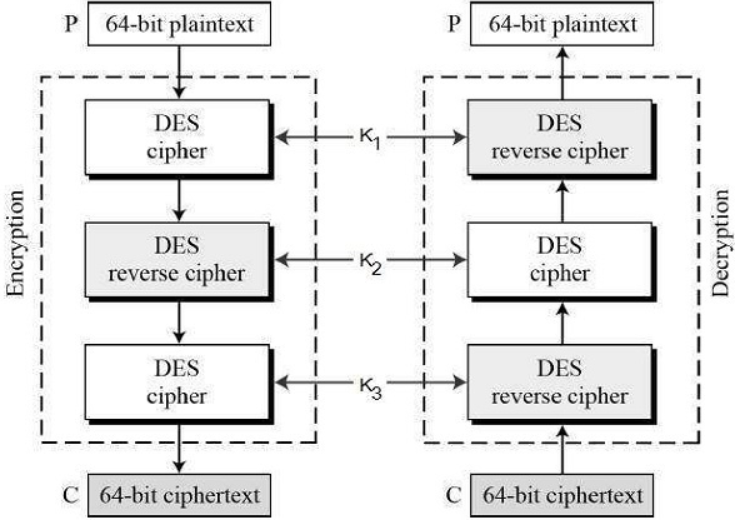

Symmetric-Key Cryptography
The same key is used by the sender (for encryption) and the receiver (for decryption). The key is shared.
ASYMMETRIC-KEY CRYPTOGRAPHY
Asymmetric cryptography, also known as public-key cryptography, a process that uses a pair of related keys -- one public key and one private key -- to encrypt and decrypt a message and protect it from unauthorized access or use.
Kept by the receiver to decrypt the message. It is known only by the owner.
A key that announced to the public.
In such a system, any person can encrypt a message using the receiver's public key, but that encrypted message can only be decrypted with the receiver's private key.
Traditional ciphers are character-oriented. The goal is to show how modern ciphers evolved from them.
A substitution cipher substitutes one symbol with another. If the symbol in the plaintext are alphabetic characters, it will replace one character with one another. Example: A and D = 3 and 7
1.1 Monoalphabetic Cipher

In mono-alphabetic ciphers, each symbol in plain-text (eg; ‘o’ in ‘follow’) is mapped to one cipher-text symbol. No matter how many times a symbol occurs in the plain-text, it will correspond to the same cipher-text symbol.

The simplest monoalphabetic cipher is probably the shift cipher.
The concept is to replace each alphabet by another alphabet which is ‘shifted’ by some fixed number between 0 and 25.
For this type of scheme, both sender and receiver agree on a ‘secret shift number’ for shifting the alphabet. This number which is between 0 and 25 becomes the key of encryption.
1.2 Polyalphabetic Cipher
Poly-alphabetic ciphers, every symbol in plain-text is mapped to a different cipher-text symbol regardless of its occurrence.
Every different occurrence of a symbol has different mapping to a cipher-text.
The transposition cipher does not deal with substitution of one symbol with another.
It focuses on changing the position of the symbol in the plain-text.
A symbol in the first position in plain-text may occur in fifth position in cipher-text.
The set of characters of plain text is replaced by any other character, symbols or numbers. It is a very weak technique of hiding text.
In Caesar’s cipher, each alphabet in the message is replaced by three places down.
Traditional ciphers are character-oriented. The goal is to show how modern ciphers evolved from them.
It operates on binary bit sequences.
An encryption method used to encrypt data and is hard to crack by brute-force method, i.e generating random encryption keys to match with the correct one.
ROT13 ("rotate by 13 places", sometimes hyphenated ROT-13) is a simple letter substitution cipher that replaces a letter with the 13th letter after it, in the alphabet.
ROT13 is a special case of the Caesar cipher which was developed in ancient Rome.

A manual symmetric encryption technique and was the first literal diagram substitution cipher.
The scheme was invented in 1854 by Charles Wheatstone, but bears the name of Lord Playfair for promoting its use.

A block cipher takes a block of plaintext bits and generates a block of ciphertext bits, generally of same size.
The size of block is fixed in the given scheme. The choice of block size does not directly affect to the strength of encryption scheme.
1. Data Encryption Standard
The Data Encryption Standard (DES) is a symmetric-key block cipher published by the National Institute of Standards and Technology (NIST).
DES is an implementation of a Feistel Cipher. It uses 16 round Feistel structure. The block size is 64-bit.
We have mention that DES uses a 56 bit key. Actually, the initial key consists of 64 bits.
However, before the DES process even starts, every 8th bit of the key is discarded to produce a 56 bit key. That is bit position 8, 16, 24, 32, 40, 48, 56 and 64 are discarded.

It is a variant scheme based on repeated DES applications. It is still a respected block ciphers but inefficient compared to the new faster block ciphers available.
It is a variant scheme based on repeated DES applications. It is still a respected block ciphers but inefficient compared to the new faster block ciphers available.
The encryption-decryption process is as follows:
Encrypt the plaintext blocks using single DES with key K1.
Now decrypt the output of step 1 using single DES with key K2.
Finally, encrypt the output of step 2 using single DES with key K3.
The output of step 3 is the ciphertext.
Decryption of a ciphertext is a reverse process. User first decrypt using K3, then encrypt with K2, and finally decrypt with K1
3. Advanced Encryption Standard (AES)
The more popular and widely adopted symmetric encryption algorithm likely to be encountered nowadays is the Advanced Encryption Standard (AES). It is found at least six time faster than triple DES.
The features of AES are as follows:
Symmetric key symmetric block cipher
128-bit data, 128/192/256-bit keys
Stronger and faster than Triple-DES
Provide full specification and design details
Software implementable in C and Java
Byte Substitution (SubBytes)
The 16 input bytes are substituted by looking up a fixed table (S-box) given in design. The result is in a matrix of four rows and four columns.
Each of the four rows of the matrix is shifted to the left. Any entries that ‘fall off’ are re-inserted on the right side of row.
Shift is carried out as follows:
First row is not shifted.
Second row is shifted one (byte) position to the left.
Third row is shifted two positions to the left.
Fourth row is shifted three positions to the left.
The result is a new matrix consisting of the same 16 bytes but shifted with respect to each other.
Each column of four bytes is now transformed using a special mathematical function.
This function takes as input the four bytes of one column and outputs four completely new bytes, which replace the original column.
The 16 bytes of the matrix are now considered as 128 bits and are XORed to the 128 bits of the round key. If this is the last round then the output is the ciphertext.
Otherwise, the resulting 128 bits are interpreted as 16 bytes and we begin another similar round.
Advanced Encryption Standard (AES) Decryption Process
The process of decryption of an AES ciphertext is similar to the encryption process in the reverse order.
Each round consists of the four processes conducted in the reverse order −
Add round key
Mix columns
Shift rows
Byte substitution
4. International Data Encryption Algorithm (IDEA)
It is a sufficiently strong block cipher with a block size of 64 and a key size of 128 bits.
A number of applications use IDEA encryption, including early versions of Pretty Good Privacy (PGP) protocol. The use of IDEA scheme has a restricted adoption due to patent issues.
The Simplified International Data Encryption Algorithm (IDEA) is a symmetric key block cypher that:
uses a fixed-length plaintext of 16 bits and
encrypts them in 4 chunks of 4 bits each
to produce 16 bits ciphertext.
The length of the key used is 32 bits.
The key is also divided into 8 blocks of 4 bits each.
Key is the sequence that controls the operation and behavior of the cryptographic algorithm.
Rules used in algorithms to convert a document into a secret document.
Keyspace is the range of possible values of the key.
Two types of Keys:
The same key is used both for encryption and decryption.
Ex. DES, Triple DES, AES, Blowfish
Different keys are used for encryption and decryption
Ex. RSA (Rivest-Shamir-Adleman of MIT)
PGP (Phil Zimmerman of MIT)
The most important properties of public key encryption scheme are:
Different keys are used for encryption and decryption. This is a property which set this scheme different than symmetric encryption scheme.
Each receiver possesses a unique decryption key, generally referred to as his private key.
Receiver needs to publish an encryption key, referred to as his public key.
Some assurance of the authenticity of a public key is needed in this scheme to avoid spoofing by adversary as the receiver. Generally, this type of cryptosystem involves trusted third party which certifies that a particular public key belongs to a specific person or entity only.
Encryption algorithm is complex enough to prohibit attacker from deducing the plaintext from the ciphertext and the encryption (public) key.
Though private and public keys are related mathematically, it is not be feasible to calculate the private key from the public key. In fact, intelligent part of any public-key cryptosystem is in designing a relationship between two keys.
RSA Cryptosystem
RSA algorithm is asymmetric cryptography algorithm. Asymmetric actually means that it works on two different keys i.e. Public Key and Private Key.
As the name describes that the Public Key is given to everyone and Private key is kept private.
An example of asymmetric cryptography:
A client (for example browser) sends its public key to the server and requests for some data.
The server encrypts the data using client’s public key and sends the encrypted data.
Client receives this data and decrypts it.
Cryptography Hash Functions
Hash functions are extremely useful and appear in almost all information security applications.
A hash function is a mathematical function that converts a numerical input value into another compressed numerical value. The input to the hash function is of arbitrary length but output is always of fixed length.
Values returned by a hash function are called message digest or simply hash values.
The typical features of hash functions are:
Fixed Length Output (Hash Value)
Hash function coverts data of arbitrary length to a fixed length. This process is often referred to as hashing the data.
In general, the hash is much smaller than the input data, hence hash functions are sometimes called compression functions.
Since a hash is a smaller representation of a larger data, it is also referred to as a digest.
Hash function with n bit output is referred to as an n-bit hash function. Popular hash functions generate values between 160 and 512 bits.
Message Digest (MD)
MD5 was most popular and widely used hash function for quite some years.
The MD family comprises of hash functions MD2, MD4, MD5 and MD6. It was adopted as Internet Standard RFC 1321. It is a 128-bit hash function.
MD5 digests have been widely used in the software world to provide assurance about integrity of transferred file.
For example, file servers often provide a pre-computed MD5 checksum for the files, so that a user can compare the checksum of the downloaded file to it.
In 2004, collisions were found in MD5. An analytical attack was reported to be successful only in an hour by using computer cluster. This collision attack resulted in compromised MD5 and hence it is no longer recommended for use.
Secure Hash Algorithm (SHA)
Family of SHA comprise of four SHA algorithms; SHA-0, SHA-1, SHA-2, and SHA-3. Though from same family, there are structurally different.
A retronym applied to the original version of the 160-bit hash function published in 1993 under the name "SHA".
It was withdrawn shortly after publication due to an undisclosed "significant flaw" and replaced by the slightly revised version SHA-1.
A 160-bit hash function which resembles the earlier MD5 algorithm.
This was designed by the National Security Agency (NSA) to be part of the Digital Signature Algorithm. Cryptographic weaknesses were discovered in SHA-1, and the standard was no longer approved for most cryptographic uses after 2010.
A family of two similar hash functions, with different block sizes, known as SHA-256 and SHA-512. They differ in the word size; SHA-256 uses 32-byte words where SHA-512 uses 64-byte words.
There are also truncated versions of each standard, known as SHA-224, SHA-384, SHA-512/224 and SHA-512/256. These were also designed by the NSA.
A hash function formerly called Keccak, chosen in 2012 after a public competition among non-NSA designers.
It supports the same hash lengths as SHA-2, and its internal structure differs significantly from the rest of the SHA family.
RIPEMD
The RIPEMD is an acronym for RACE Integrity Primitives Evaluation Message Digest.
This set of hash functions was designed by open research community and generally known as a family of European hash functions.
The first RIPEMD was not considered as a good hash function because of some design flaws which leads to some major security problems one of which is the size of output that is 128 bit which is too small and easy to break. In the next version:
the design flaw is removed but the output is still 128 bit which makes it less secure.
is the next version which increases the output length to 160 bit and increases the security level of the hash function.
This function is designed to work as a replacement for 128-bit hash functions MD4, MD5, and RIPEMD-128.
RIPEMD-256 and RIPEMD-320
are extension of RIPEMD-128 which provide same security as RIPEMD-160 and RIPEMD-128 which is designed for application which prefer large hash value rather than more security level.
WHIRLPOOL
Whirlpool is a cryptographic hash function created by Vincent Rijmen and Paulo S.L.M. Barreto.
It was first published in 2000 and revised in 2001 and 2003. It was derived form square and Advanced Encryption Standard. It is a block cipher hash function and designed after square block cipher.
It takes less than 256 bits length input and convert it in 512 bit hash.
The state of the function changes in ever round by using four operations:
It is a right multiplication of each row by an 8*8 matrix.
It is a simple table lookup and gives nonlinear mapping.
In this the 512 bits of the round key is goes through XOR with 512 bit of current state.
In this except the first column of current state are cyclically downward shifted.
Applications of Hash Functions
Instead of storing password in clear, mostly all logon processes store the hash values of passwords in the file.
The Password file consists of a table of pairs which are in the form (user id, h(P)).
An intruder can only see the hashes of passwords, even if he accessed the password. He can neither logon using hash nor can he derive the password from hash value since hash function possesses the property of pre-image resistance.
Data integrity check is a most common application of the hash functions. It is used to generate the checksums on data files. This application provides assurance to the user about correctness of the data.
Digital Signatures
A digital signature—a type of electronic signature—is a mathematical algorithm routinely used to validate the authenticity and integrity of a message (e.g., an email, a credit card transaction, or a digital document).
Digital signatures create a virtual fingerprint that is unique to a person or entity and are used to identify users and protect information in digital messages or documents.
In emails, the email content itself becomes part of the digital signature. Digital signatures are significantly more secure than other forms of electronic signatures.
How do digital signatures work?
Hash function
Public key cryptography
Public key infrastructure (PKI)
Certificate authority (CA)
Digital certificates
Pretty Good Privacy (PGP)/OpenPGP